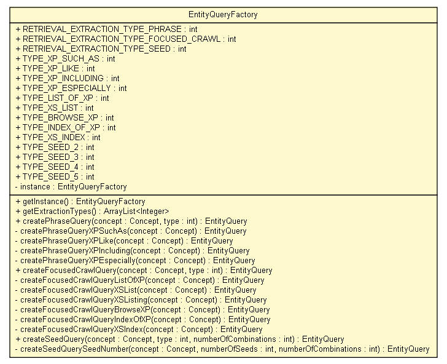

tud.iir.extraction.entity
Class EntityQueryFactory

java.lang.Object
 tud.iir.extraction.entity.EntityQueryFactory
tud.iir.extraction.entity.EntityQueryFactory
public class EntityQueryFactory
- extends java.lang.Object
The EntityQueryFactory creates EntityQuery objects.
| Methods inherited from class java.lang.Object |
clone, equals, finalize, getClass, hashCode, notify, notifyAll, toString, wait, wait, wait |
RETRIEVAL_EXTRACTION_TYPE_PHRASE
public static final int RETRIEVAL_EXTRACTION_TYPE_PHRASE
- See Also:
- Constant Field Values
RETRIEVAL_EXTRACTION_TYPE_FOCUSED_CRAWL
public static final int RETRIEVAL_EXTRACTION_TYPE_FOCUSED_CRAWL
- See Also:
- Constant Field Values
RETRIEVAL_EXTRACTION_TYPE_SEED
public static final int RETRIEVAL_EXTRACTION_TYPE_SEED
- See Also:
- Constant Field Values
TYPE_XP_SUCH_AS
public static final int TYPE_XP_SUCH_AS
- See Also:
- Constant Field Values
TYPE_XP_LIKE
public static final int TYPE_XP_LIKE
- See Also:
- Constant Field Values
TYPE_XP_INCLUDING
public static final int TYPE_XP_INCLUDING
- See Also:
- Constant Field Values
TYPE_XP_ESPECIALLY
public static final int TYPE_XP_ESPECIALLY
- See Also:
- Constant Field Values
TYPE_LIST_OF_XP
public static final int TYPE_LIST_OF_XP
- See Also:
- Constant Field Values
TYPE_XS_LIST
public static final int TYPE_XS_LIST
- See Also:
- Constant Field Values
TYPE_BROWSE_XP
public static final int TYPE_BROWSE_XP
- See Also:
- Constant Field Values
TYPE_INDEX_OF_XP
public static final int TYPE_INDEX_OF_XP
- See Also:
- Constant Field Values
TYPE_XS_INDEX
public static final int TYPE_XS_INDEX
- See Also:
- Constant Field Values
TYPE_SEED_2
public static final int TYPE_SEED_2
- See Also:
- Constant Field Values
TYPE_SEED_3
public static final int TYPE_SEED_3
- See Also:
- Constant Field Values
TYPE_SEED_4
public static final int TYPE_SEED_4
- See Also:
- Constant Field Values
TYPE_SEED_5
public static final int TYPE_SEED_5
- See Also:
- Constant Field Values
instance
private static EntityQueryFactory instance
EntityQueryFactory
private EntityQueryFactory()
getInstance
public static EntityQueryFactory getInstance()
getExtractionTypes
public static java.util.ArrayList<java.lang.Integer> getExtractionTypes()
createPhraseQuery
public EntityQuery createPhraseQuery(Concept concept,
int type)
createPhraseQueryXPSuchAs
private EntityQuery createPhraseQueryXPSuchAs(Concept concept)
createPhraseQueryXPLike
private EntityQuery createPhraseQueryXPLike(Concept concept)
createPhraseQueryXPIncluding
private EntityQuery createPhraseQueryXPIncluding(Concept concept)
createPhraseQueryXPEspecially
private EntityQuery createPhraseQueryXPEspecially(Concept concept)
createFocusedCrawlQuery
public EntityQuery createFocusedCrawlQuery(Concept concept,
int type)
createFocusedCrawlQueryListOfXP
private EntityQuery createFocusedCrawlQueryListOfXP(Concept concept)
createFocusedCrawlQueryXSList
private EntityQuery createFocusedCrawlQueryXSList(Concept concept)
createFocusedCrawlQueryXSListing
private EntityQuery createFocusedCrawlQueryXSListing(Concept concept)
createFocusedCrawlQueryBrowseXP
private EntityQuery createFocusedCrawlQueryBrowseXP(Concept concept)
createFocusedCrawlQueryIndexOfXP
private EntityQuery createFocusedCrawlQueryIndexOfXP(Concept concept)
createFocusedCrawlQueryXSIndex
private EntityQuery createFocusedCrawlQueryXSIndex(Concept concept)
createSeedQuery
public EntityQuery createSeedQuery(Concept concept,
int type,
int numberOfCombinations)
createSeedQuerySeedNumber
private EntityQuery createSeedQuerySeedNumber(Concept concept,
int numberOfSeeds,
int numberOfCombinations)